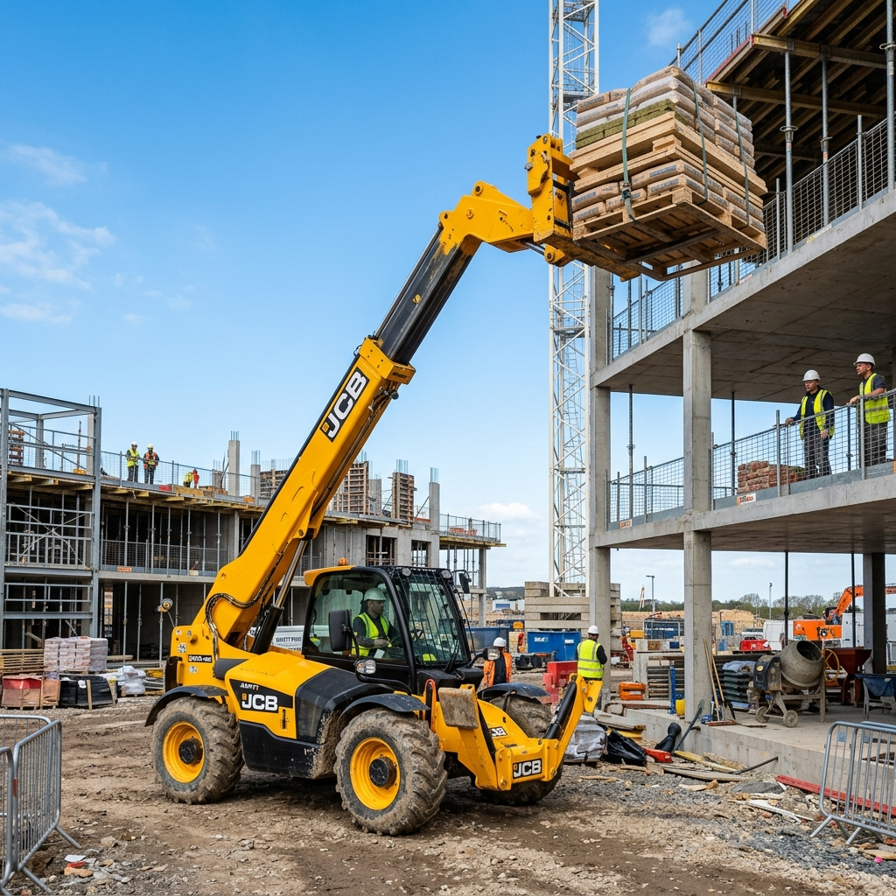

Wydajne maszyny do pracy w każdych warunkach. Skontaktuj się, by sprawdzić dostępność.

Niezastąpiona maszyna przy pracach budowlanych wymagających podawania materiałów na duże wysokości. Wyposażona w widły oraz opcjonalną łyżkę pojemnościową.
Lekka i bardzo zwinna maszyna, idealna do ciasnych przestrzeni. Sprawdza się przy załadunku kruszywa, odśnieżaniu i transporcie wewnętrznym.